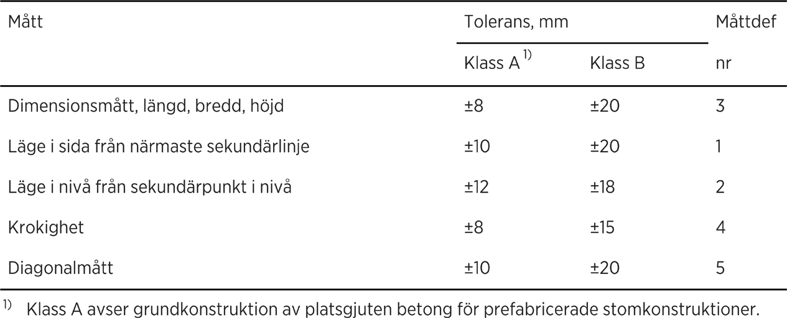

UNDERGRUND, UNDERBYGGNAD, SKYDDANDE LAGER I MARK, GRUNDKONSTRUKTIONER OCH STÖDKONSTRUKTIONER |
|
15 |
GRUNDKONSTRUKTIONER |
15.S |
Grundkonstruktioner för hus |
|
TOLERANSER |
|
Toleranser under 01.S gäller. |
15.S/11 |
Grundkonstruktioner - platsgjuten betong |
|
TOLERANSER |
|
Grundkonstruktioner av platsgjuten betong, utom hela grundplattor för småhus, ska uppfylla kraven enligt tabell AMA 15.S/ESE-1. |
TABELL AMA 15.S/ESE-1. GRUNDKONSTRUKTIONER AV PLATSGJUTEN BETONG

Grundplattor, hela |
|
15.SG/11 |
Grundplattor, hela - platsgjuten betong |
|
TOLERANSER |
|
Hela grundplattor av platsgjuten betong för småhus ska uppfylla kraven enligt tabell AMA 15.SG/ESE-1. |
TABELL AMA 15.SG/ESE-1. BJÄLKLAGSKANT PÅ HELA GRUNDPLATTOR AV PLATSGJUTEN BETONG – OAVSETT LÄNGD
Mått |
Tolerans mm |
Måttdef nr |
Längd och bredd |
±15 |
3 |
Krokighet |
±15 |
4 |
Diagonalmått |
±20 |
5 |
Läge i nivå från sekundärpunkt i nivå |
±18 |
2 |